Web 4.0 Concept

Imagine a digital world where
- you are in full control and all data belongs to you.
- your digital life only needs 1 watt of energy (which is nothing)
- you can communicate with everyone everywhere without worries
- information is authentic
- you have access to unlimited education information
This is what web4 is all about.
Internet Evolution to Web 4.0
Classic Internet
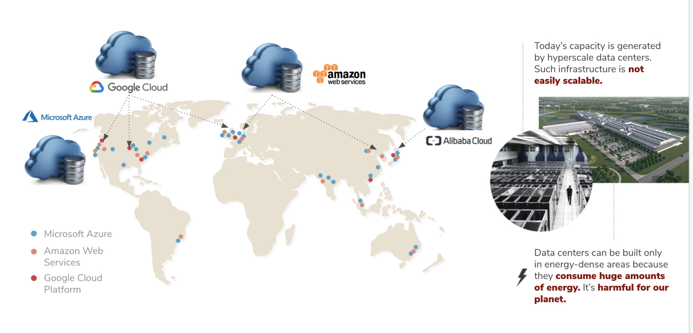
Everything is structured as client-server model

- The servers run as applications inside huge datacenters using a lot of energy
- Most of the processes in those servers are being repeated = highly inefficient
- We exist 100x times, very inefficient
- This leads to a lot of centralization -> insecure, as well as abuse of our data
- This has also been called Web 1.0 and Web 2.0
Blockchain Based Web 3.0 Vision
Blockchain decentralized the server, but in principle it remains a client - server model

- It is definitely a step in the right direction but the paradigm is the same
- We as users still exist in different systems, and have to deal with different applications (protocols)
- These blockchains can be integrated, and through Web 2.0 concepts the web application can interact with multiple blockchains at the same time
- This has also been called Web 3.0
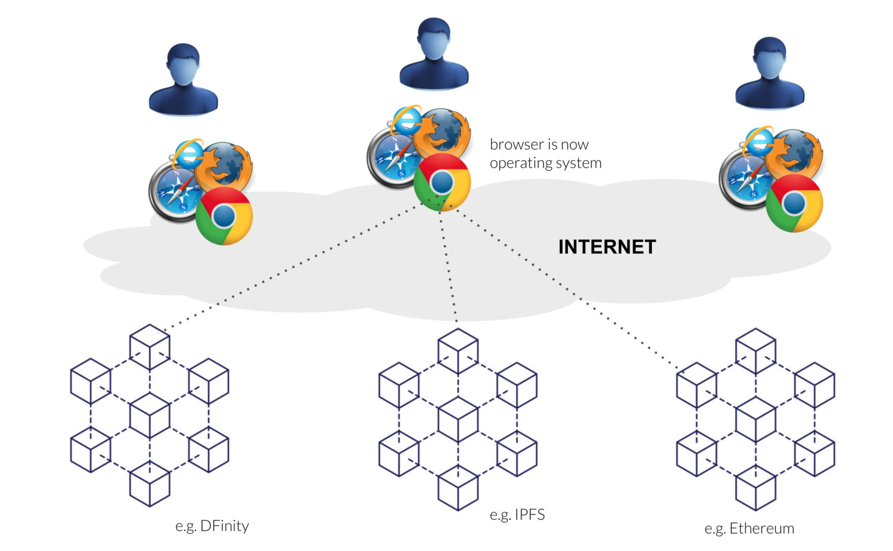
The browser has now become our operating system running on javascript. All applications run in our browser and interact with multiple blockchains.
Please note we are 100% compatible with Web3 and we support this way of working completely. We see ourselves as a missing layer for Web 3.0.
Evolution To Peer2Peer
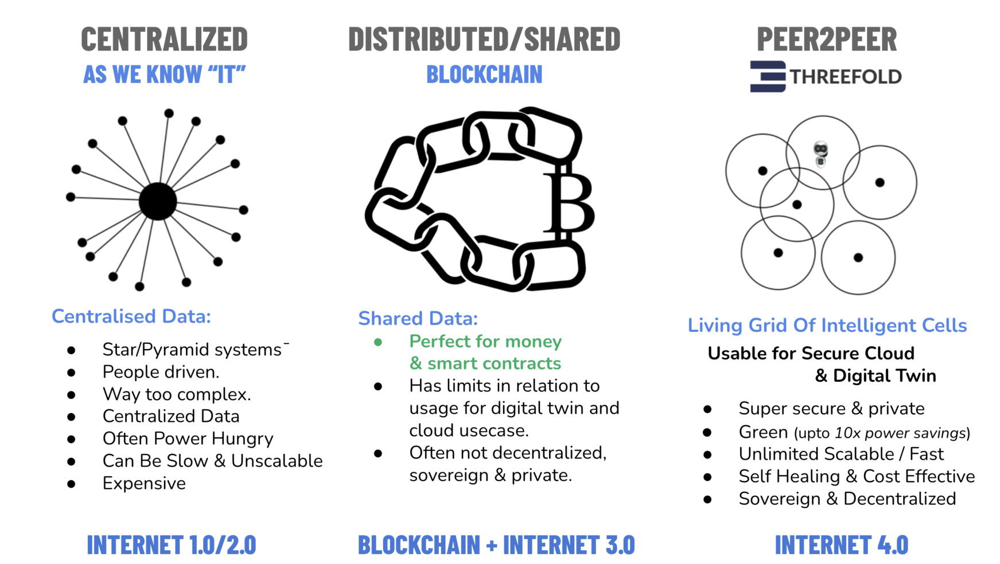
The Web 4.0 Digital Twin Vision
In the Web 4.0 vision, the user has been put in the center (digital twin usecase)

- you in the center of your digital life
- blockchain only needed for specific functions (money, identity, smart contracts, ...)
- internet 10x more efficient
- data sovereignity for all
- an internet created by all for all = be the internet
What Is
Web 4.0 Digital Twin
Our web4 Digital Twin architecture puts the user central. The Digital Twin is a special mode of our TF Executor concept.
Each user has a private secure executor running which we call a digital twin.

Every user uses any browser to access their digital twin. Our TFCONNECT makes sure that the connection is secure.
The secure browser engine runs on the TFGrid close to where your Twin is.
This takes care of a very secure approach and unlimited scalability.
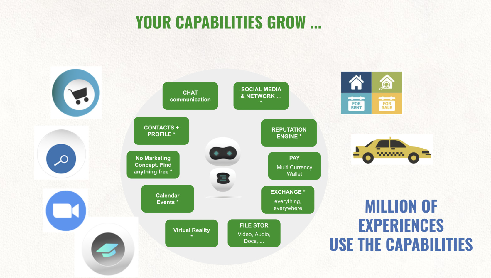
The twin has basic capabilities which are strongly version controlled, but contributions from the global community are more than welcome.
The idea is to create a system which is simply good enough for any possible experience.
Rather than survival of the fittest, we believe in a system of collaboration, where we invite everyone to make the system better so it fits us all. We don't need three chat systems, we need one which is usable by thousands of experiences.
Developers create Experiences on top, not apps. Experiences re-use the same capabilities.
This has huge benefits
- 10x less engineering effort needed per experience
- more sustainable (less energy loss)
- easier for user, no duplication
- more simplicy
- more powerful
Coming H3 2022
The Digital Twin Provides your digital life.
- full control over your own digital life
- experiences to be created using standard web technologies (html, javascript)
- the digital twin delivers the web interface to your (secure) browser

- no need for information to travel to central datacenters, all communication are fast and private between digital twins. No more client-server
- all logic of your digital life is 100% private to you running in your twin
- a secure browser engine makes sure that rendering and javascript execution happens in secure context, give hackers no chance (optional)
- this is super efficient and sustainable, +10x power savings
- no blockchain required for your digital life = more privacy, performance, green
- expception: blockchain is needed for digital currencies and as phonebook for digital twins identity
ThreeFold grid inspired by nature

- Just like we have trillions of cells in our body, so can billions of twins live next to each other
- Each twin has memory, knows how to communicate, has knowledge, history, ...
- Twins like cells cannot live without a body = TFGrid.
This approach scales for ever

- There can be unlimited amounts of 3Nodes as well as Executors (Digital Twins and Web4)
- There are no bottlenecks nor centralization points
- Our peer2peer network technology takes care of routing and security issues between the Twins and the 3Nodes. The shortest paths is always looked for.
ThreeFold is compatible with the current IT world.
While we push for a new possible, in the meantime our TFGrid infrastructure is compatible with the existing IT and internet ecosystem.

- any workload which can run inside linux can run on top of our TFGrid
- any web developer can create apps (experiences) on top of the Digital Twin
- just like kwatth is used as a measurement of capacity for solar panels we have CU, SU and NU, which are called cloudunits.
- TFT is required to buy CU,SU,NU
Web 4 unique storage architecture
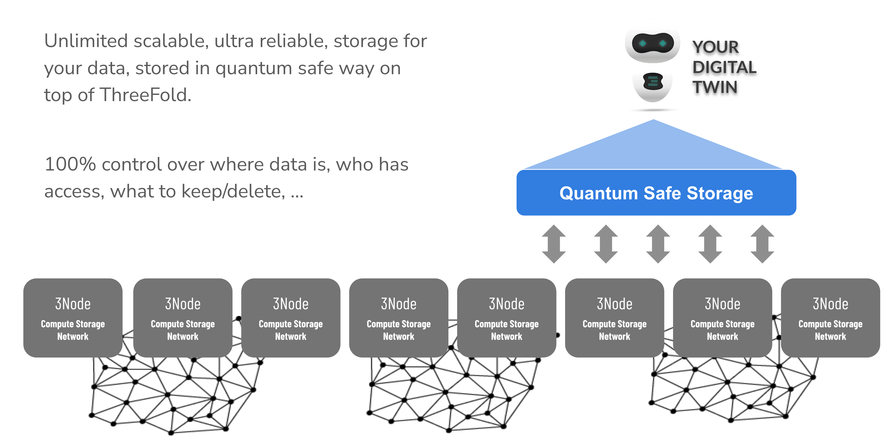
Each Digital Twin can now store data which can never be lost or corrupted.
- This is not based on replication or blockchain!
- Data is distributed over multiple 3nodes in such a way that not even a quantum computer can hack it.
- The data is 100% owned by the owner and zero-knowledge proof to the the TFGrid.
- This concept scales unlimited.
Integration to Web 2

Each Digital Twin can talk to the classic internet and web 2 interfaces.
Each Twin knows how to talk legacy protocols like SMTP, POP3, DNS, ... (in development) to allow seamless integration.
In case more compute is required for a specific usecase like gaming, AI, data processing the twin can spin up compute & storage requirements on the TFGrid and as such become way more powerful for the time required.
This leads to huge flexibility and efficiency.
Any application can be developed on top and is compatible with existing development world.
Integration with blockchain (web 3)
While the twin is a better alternative than the blockchain for many protocols, certain tasks still require a blockchain, such as
- money
- smart contract between people
- consensus between lots of people around info
- proof of authority, authentication, ...
- reputation system
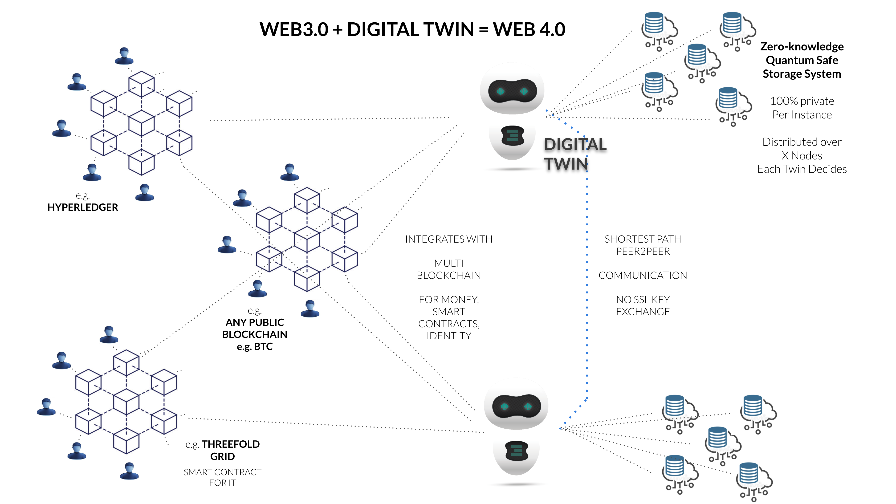
Each twin can talk to any required blockchain in a way that is 100% transparent for the user.
The ThreeFold Grid Provides the IT energy

Each 3Node is an IT Power generator. The TFGrid is the network of these 3Nodes.

Needs to be super simple, just like a solar panel generates electricity.

- The 3nodes do for internet what solar panels do for large scale electricity power plants.
- They allow everyone to contribute to a new internet.
- People investing in the 3nodes are called farmers.
- Each farmer receives tokens called TFT for providing this IT capacity.
- IT Capacity is storage, compute and network capacity for this upgraded internet.
- The Twins need TFT to pay for the IT capacity they need.
Web 4 Goals
- 10x faster development efficiency should be possible
- One Language to do all (smart contract, backend, frontend, logic …)
- Easy to read & learn (few ways how to do things)
- Leads to less security issues and lower maintenance cost
- Resolve the onion issue
- Solutions grow exponentially in complexity as they grow, Web 4 resolves this
- No Painkiller Approach (resolve the root of the problem)
- Governments or Large Enterprises want one digital backbone system to resolve all their needs -Today they have too many systems and it's too complex, expensive and not secure
- Ultimate Scale
- We want to be able to grow to billions of users, our system is 100% scale out
- Our smart contract for IT allows deployment of any web 2,3 and 4 workload everywhere
- Ultimate Sovereignity
- Governments want all data in the country and their independence
- Antidote for the Cyber Pandemic
- This is a very hard one, the current architectures are very vulnerable
- The ThreeFold architecture allows for a real end2end solution
- We have e.g. browser virtualization technology (run no javascript in existing browsers)
Features
Unbreakable Deployment
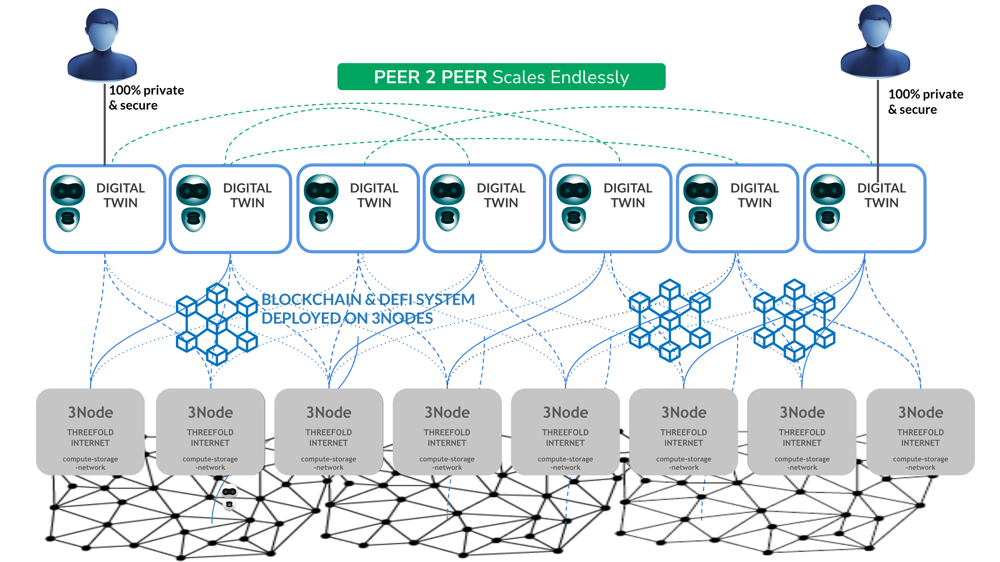
Ultra Scalable & Secure Decentralized Deployment
Example deployment
- lots of locations (offices, banks, small datacenters, universities, ...), each providing compute & storage to a private and/or public grid by means of the 3Nodes
- Each node runs Zero-OS which has no shell and cannot be accessed by any person in the organization (bank, government, enterprise)
- None of the nodes has enough data to allow anyone to reconstruct the data
- The different nodes together deliver a super resilient network of compute & network resources
Even if, in a disaster scenario, 30% of the locations would go down, the system would still function and be available to its users. This is the most reliable deployment possible in IT landscape today.
What runs on the 3Nodes
- Blockchain Nodes
- The distributed storage system (ultra safe, zero-knowledge proof)
- Digital Twins for users
- Secure Browser Engines (can be in ultra safe location)
- Stateless high security (e.g. financial) apps
This can then be combined with super nodes running in even more secure places for more central apps if there are any.
This system works with and enables the planetary network and quantum safe storage system.
Web 4 unique storage architecture

Each Digital Twin can now store data which can never be lost or corrupted.
- This is not based on replication or blockchain!
- Data is distributed over multiple 3nodes in such a way that not even a quantum computer can hack it.
- The data is 100% owned by the owner and zero-knowledge proof to the the TFGrid.
- This concept scales unlimited.
Ultimate Scale Out Capabilities
Peer2peer is the most decentralized way to experience our digital life

- each user has a digital twin
- this twin serves your complete digital life
- the digital twin represents you and has all logic required to act on your behalf
- all digital twins talk to each other over private secure links
- there is no blockchain involved for the compute, storage & network requirements
- each digital twin needs compute, network and storage resources to survive, the twin will use TFT to reserve and pay for these resources as used on the ThreeFold Grid
- The twin is the only entity who has control over the resources it requires, it is all 100% private and no blockchain involved to reserve and use that capacity
Develop any application on top of Web4
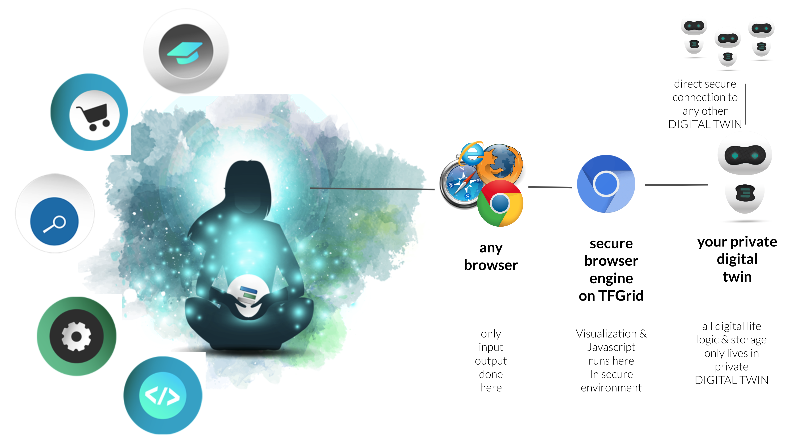
Developers can program anything on top on a digital twin. Any javascript framework can be used.
This allows ANYONE to create ANY experience with the least amount of effort.
This approach seamlessly integrates with any Web 3 or Blockchain Solutions.
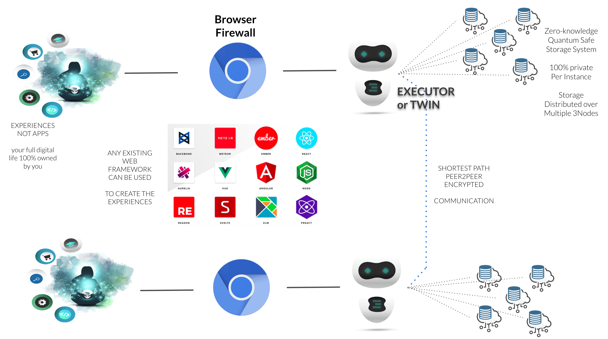
OurLedger Architecture
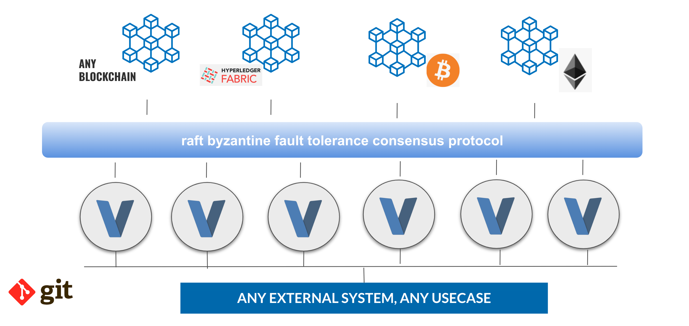
Multiple VLang engines become the validators of this system. Each VLang engine runs sort of smart contract code and will integrate with the blockchain through the consensus layer.
Only once the consensus is achieved, the result of the code will result in change in the real world (e.g. a blockchain), this allows for a lot of flexibility.
The blockchain is needed to support authentication, money transactions, multi signature, auditing records, ...
This approach is designed to be compatible with ± all existing blockchain technologies, although some are more efficient than others.
Benefits
- order of magnitude faster development
- Integrates with everything, easy to extend
- 100% sovereign (can be deployed anywhere)
- Unlimited Scalable, uses Quantum Safe Storage System
- Works with unlimited amount of blockchains and over all protocols
- Super safe, only needs the most basic functionanalities from a blockchain
- No limite in what can be created
- Actor based
The developer has unified DSL for
- Blockchain
- NFT
- Money
- Identity
- Consensus
- Ledger
- Internet Protocols
- SMS, Mail, Chat…
- Deployment of Web 2 and 3 workloads
A DSL can be created for everything.
Compatible with Blockchain & Legacy Systems
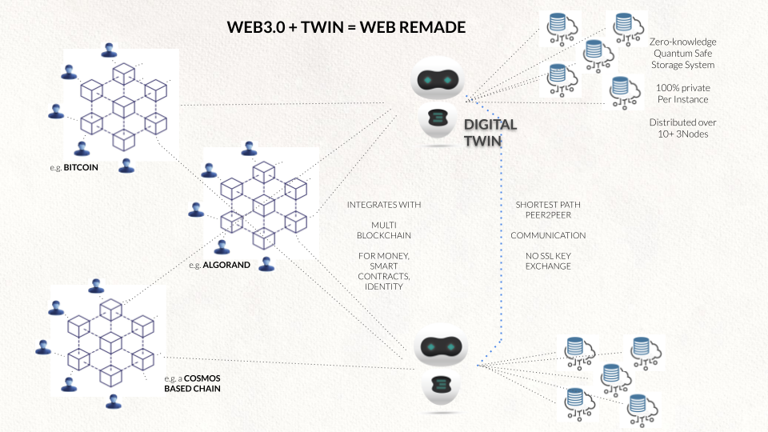
The Twins can connect to any blockchain solutions, theey are close to the twins which are on safe locations where full blockchain nodes are deployed, this leads to even more security. In other words, it's not the browser of the user who connects to the blockchain, the browser of the user connects over the Browser Firewall to the apps running on the twin which connects the blockchain. Hackers have no possibility to abuse javascript or browser vulnerabilities.

This is also compatible with any other classic IT system running behind firewalls in protected environments. The Twins can connect to any possible IT system, blockchain or classic in an ultra secure setting.
Blockchain Pruning
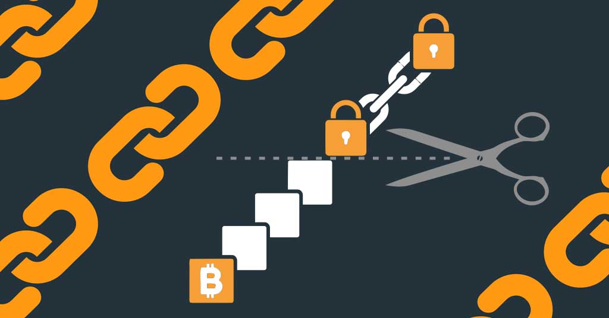
Existing blockchains don’t have a pruning feature, which means old data cannot get archived, this leads to very large blockchains rather quickly. We have developed a technology which can enable any chosen blockchain and allow old data to be parked on the Quantum Safe Storage system (means can never be corrupted or lost). It means only active data remain on the online chain, this allows for much more scalability and better utilization of the hardware.
To do effective pruning we need to modify parts of the chosen blockchain, but we know how to do this.
VLANG Powerful Development Environment
ThreeFold is the main sponsor behind vlang
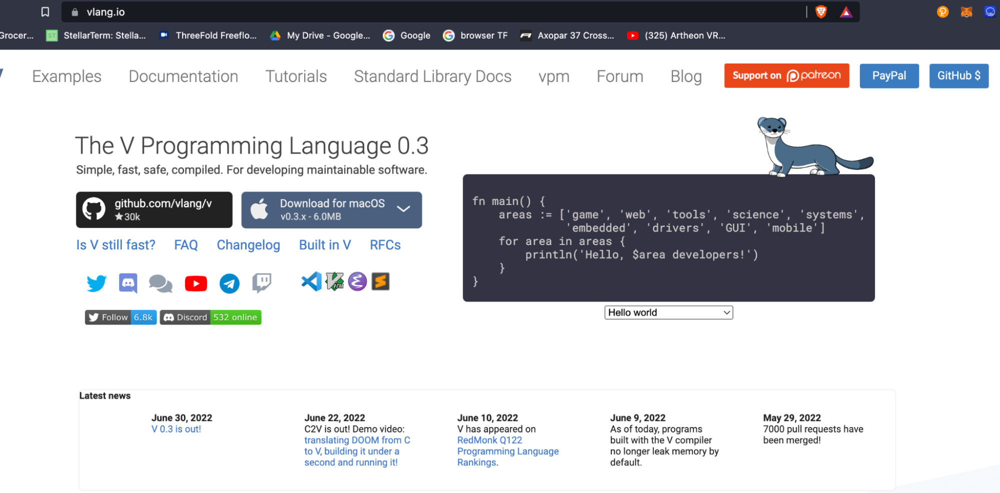
Vlang is a language heavily inspired by google’s GOLANG but faster and more friendly with resources. It's also a language much easier to understand and code in. This language has 28.000 github stars which is +25% of google itself for golang, this shows the potential.
We use VLANG for
- Digital twin backend (the main language for our digital life)
- Provisioning language for Threefold Grid (in progress)
- Language integrated with our chosen blockchain Algorand (we are close to having a full VLang compatible SDK for Algorand as well as VTeal smart contract language, this will be the easiest way to integrate and develop on top of Algorand)
- Dynamic Executor Language (fastest way to develop peer2peer on top of ThreeFold Grid).
This Dynamic Executor Language is used in * Digital Twin * BCDB = BlockChain Database * ThreeFold Grid Executors (serverless functions & compatibility layer for old internet)
This approach allows us maximum productivity and minimal resources utilization which leads to much more power and hardware efficient design.
Our approach is
- Ultimate simplicity (do more with less)
- Easy to read code (DSL = Domain Specific Languages)
- Ultra reliable communication thanks to RMB (Reliable Message Bus)
- Safety, only support one best way how to do something
Executor VLANG
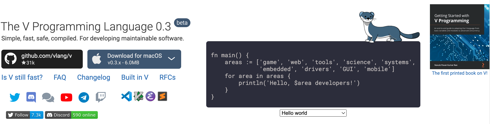
VLang is an exciting language sponsored by ThreeFold. VLang has 27000 github stars and we believe its a very good language to build executor functions with.
Why did we choose vlang as a first language to support on the TF Executors?
- Its a very fast language (minimal energy & cpu footprint)
- Its easy to learn
- It compiles very fast

Utilization
- As smart contract language inside chosen blockchain
- As provisioning layer for TFGrid
- As serverless function layer for Executors (super exciting)
Coming H1 2023
Finance
Digital Currency Wrapping

In Addition to allowing a user to directly integrate with an outside digital currency, we also suggest allowing wrapping of the outside currencies e.g. a wrapped BitCoin (BTC).
This Wrapped BTC is then stored on the main or dedicated digital currency chain (can even be one chain per wrapped asset). The IBC (see below) allows the wrapped BTC to be used by the user from their wallet and digital twin.
The Original BTC is stored offline in the Knox Security Vault using our Quantum Safe Storage Codec. This allows for ultimate security and flexibility for users.
The bank can choose to allow users to exchange digital currencies with the external world or not, through IBC (Inter Blockchain Protocol, see below), this can be easily achieved. The bank can even choose to become a liquidity provider for the existing digital currency world (optional).
Revolut, for example, has chosen to keep the digital currencies in their internal system, and the user can only exchange from their own fiat currency to the digital currency and back. We believe though that it's nicer to allow the user to exchange digital currencies with the outside world if it matches the Bank’s Regulatory requirements.
It is possible to introduce multiple stages e.g. in the digital bank ecosystem, users can freely exchange currencies with each other (stays on chain). Once they want to go off chain, extra checks are done to make sure there is no fraud involved, it can then take a certain time before it executes.
Peer2Peer Reputation System
Reputation is a very important part to any financial system. This allows users to see the reputation of the people they are transacting or doing business with.
We are developing a unique peer2peer reputation system to allow the power of network effects to come up with strong verification and reputation proofs. We think this might become an important added value that any financial institution government could deliver to its customers/citizens.
Proof of Authenticity
TODO: (sacha)
Proof of Authenticity (PoA) is an algorithm that allows peers to verify that people, products and statements on the ThreeFold Grid are genuine. It acts as a reputation engine to find information on the grid.
Why Proof of Authenticity
The ThreeFold Grid is a decentralized internet infrastructure that can contain a vast amount of information. It will be valuable to it's users according to the reliability of:
- The people they connect with;
- The products and services they access;
- The information they consume.
Therefore, to automate information search in a decentralized and trustful environemnt, an algorithm that is able to scale information verification in a neutral way is required.
Proof of authenticity puts forward a very simple method to verify the genuiness of information on the ThreeFold Grid as well as it's participants.
Here's an example of how PoA works in a decentralized context:
- Someone fills in their profile with their personal and professional data.
- A former colleague finds their information and verifies their information as being authentic.
- Once a user gets verified e.g. 10 times, they can be trusted to be real and genuine.
The above can also apply to products, statements and more. In that sense, PoA can solve multiple digital challenges such as:
- The verifiability of information and news
- A non-biased way to rate products and services.
- website authenticity
- etc.
DeFi and Peer To Peer Exchange
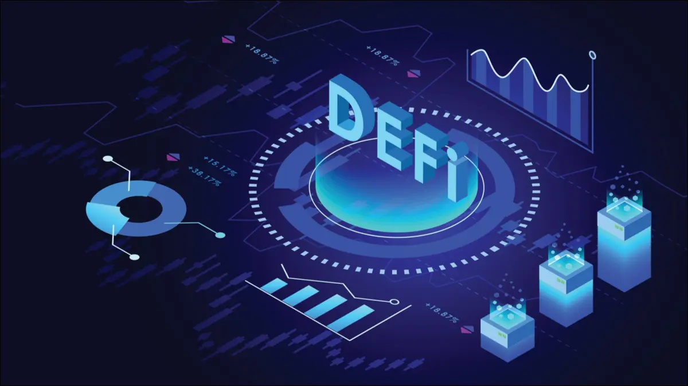
DeFi is an amazing trend which banks should try to leverage, if not for internal usage, to provide a more transparent and safer way for their customers to exchange their currencies (digital and fiat) in a fully regulated environment.
We have all the building blocks available to make this work.
Thanks to the digital twin this is implemented in a fully peer2peer way, while using DeFi Smart Contracts on the blockchain.
Knox Security Vault

The ability to use multiple secure areas which can be used to provide offline storage of keys and digital currency cold wallets.
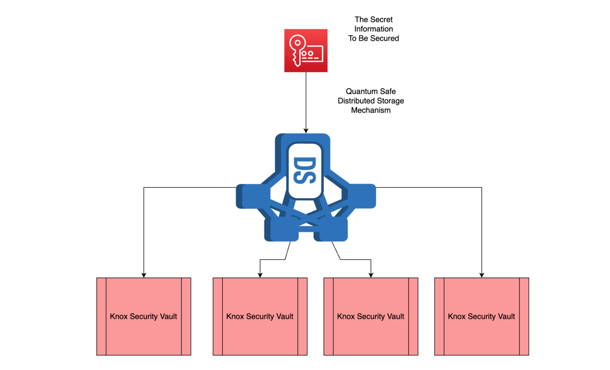
Each Knox Security Vault is an ultra safe area. Thanks to our Quantum Safe Storage system, it is not possible to retrieve a key even if a hacker would be in one safe, as a combination of three safes is required to recover information.
We suggest using the key storage in the following way: each wallet from a user stores the encrypted dispersed key distributed over four or five Knox Security Vaults. Only in the case of a disaster and user strong identification, an user could get access (in the case of death of the customer, to hand-over to the relatives).
ThreeFold executors

Executors are like digital twins but they are not linked to one specific person, they are stateless and can work on our behalf for any specific usecase and/or any pre-implemented. Some would call it our approach to serverless functions.
Peer2peer is the most decentralized way to experience our digital life.
- all executors talk to each other over private secure links
- there is no blockchain involved for the compute, storage & network requirements
- each executor needs compute, network and storage resources, this is managed by L0 Validators
- The executor (web4 or twin) is the only entity who has control over the resource it requires, its all 100% private and fully peer2peer
3 INITIAL USECASES FOR EXECUTORS
- IPFS
- distributed storage location service
- we add: reliability, locality, cost effectiveness, …
- TERRAFORM EXECUTORS
- Smart contract for IT
- WEBGATEWAY
- Bridge web protocols to internal compute workloads
From Client Server to Peer2Peer
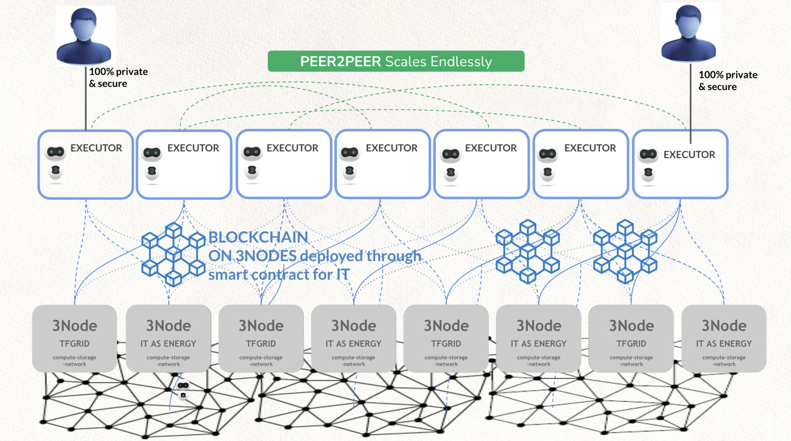
Peer2peer is the most decentralized way to experience our digital life.
- all executors talk to each other over private secure links
- there is no blockchain involved for the compute, storage & network requirements.
- each executor needs compute, network and storage resources this is managed by L0 Validators.
- The executor (web4 or twin) is the only entity who has control over the resource it requires, its all 100% private and fully peer2peer.
Executor TERRAFORM
Terraform is a mechanism on how to deploy IT workloads in a reproducible and safe way.

A terraform script has multiple parts and can get deployed by an executor.

See the ThreeFold Technology book to learn more about how to use smarts contracts for IT and deploy any workload.
Consensus Owned & Deployed Solutions

Coming H1 2023
IPFS storage integration on Web4
IPFS is a standard used in the blockchain world on how to store and retrieve data from the blockchain.
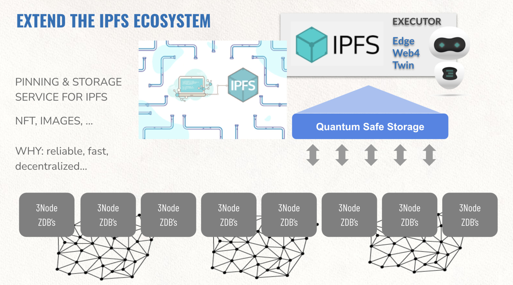
Each executor in the form of Web4 or twin is compatible with IPFS.
Each IPFS object can be safely stored on QSSS.
This provides the following unique Features
- unbreakable storage for IPFS
- more distribution on global scale
- more performance for the enduser
Planned 2023
Cloud Layer
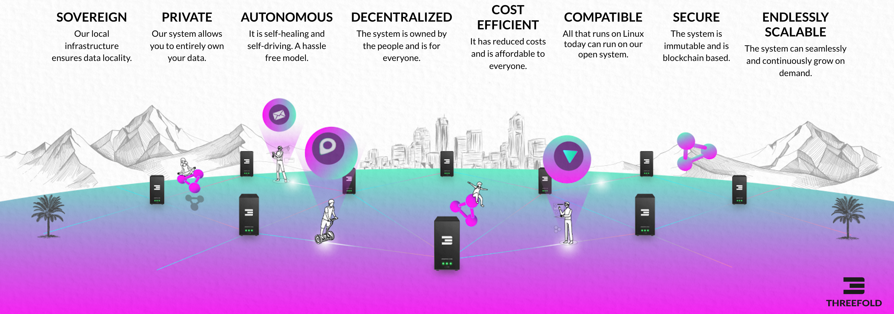
To allow web4 to work we need a reliable cloud layer, which is a layer capable to execute all workloads as described in this document in a safe and a reliable way.
Ultra Secure Operating System = Zero-OS
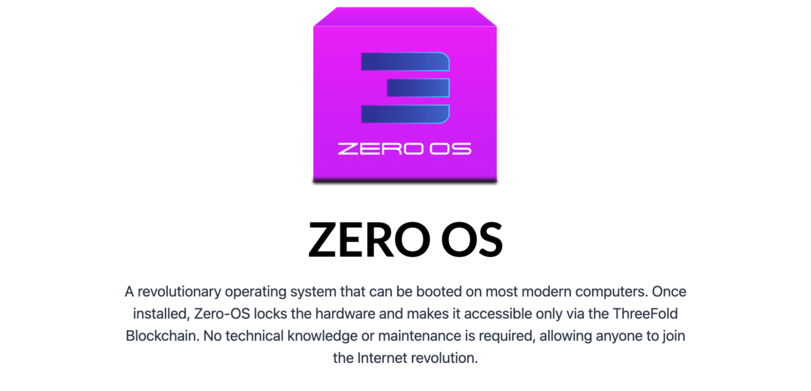
Zero-OS is a lightweight and efficient operating system. There is no shell, local nor remote. It supports a small number of primitives; the low-level functions it could perform natively in the operating system. Zero-OS (ZOS) is the operating system which allows the 3Nodes to be used to provide IT capacity in all safety to its applications. ZOS has been developed by ThreeFold from scratch, starting from the Linux kernel with the purpose to improve on efficiency, energy usage, performance, scale, cost of management and security. All applications, twins and blockchains are secured by the Zero-OS operating system.
Why?
Most centrally managed operating systems rely on human management and intervention, which leads to downtime and security issues.
Since the creation of the Internet, the development of operating systems mostly arises through the addition of further layers of code to improve capabilities and functionalities of software, this leads to too much complexity, performance loss, and energy usage issues.
To build a truly scalable, private and efficient Internet infrastructure, we had to start from scratch to ensure a minimal hacking surface, improve efficiency, and ensure that anyone who connects hardware to the ThreeFold Grid wouldn’t be able to access the private user data thanks to our Quantum Safe Storage System.
The result is game-changing as ZOS is able to provide the following benefits:
- Stateless: without shell, local or remote, it does not allow for inbound network connections to happen nor can data be fetched by node operators.
- Lightweight: Zero-OS can save up-to 10X energy on storage workloads.
- Autonomous: it runs by itself and doesn’t require humans to maintain it, removing human error and considerably reducing the hacking surface.
- Decentralized: deploy IT workloads and infrastructures in a private and neutral environment.
- Secure: store workloads in a quantum safe (future proof) way.
- Private: communicate end-to-end without centralized servers or APIs in the middle.
- Compatible: run anything that can run on Linux but in a decentralized environment.
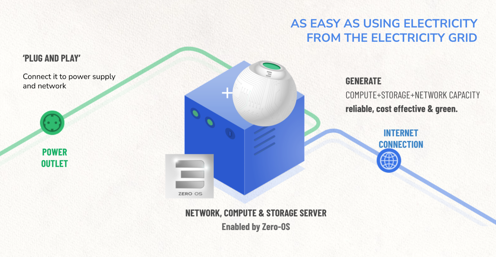
Imagine an operating system with the following benefits
- Upto 10x more efficient for certain workloads (e.g. storage)
- No installation required
- All files are deduplicated for the VM’s, containers and the ZOS itself, no more data duplicated filesystems
- The hacking footprint is super small, which leads to much more safe systems
- Every file is fingerprinted and gets checked at launch time of an application
- There is no shell or server interface on the operating system
- The networks are end2end encrypted between all Nodes
- There is the possibility to completely disconnect the compute/storage from the network service part which means hackers have a lot less chance to get to the data.
- A smart contract for IT layer allows groups of people to deploy IT workloads with concensus and full control
- All workloads which can run on linux, can run on Zero-OS but in a much more controlled, private and safe way
More info see https://library.threefold.me/info/threefold#/technology/zos
Quantum Safe Storage

Imagine a storage system with the following benefits:
- upto 10x more efficient (power and usage of hardware)
- ultra reliable, data can not be lost
- ultra safe & private
- ultra scalable
- sovereign, data is close to you in the country of your choice
- true Peer To Peer, by everyone for everyone.
It is not a dream, it does already exist, and is the underpinning of the ultra safe Cloud & Internet Backend System empowering this solution.
Our storage architecture follows the true Peer To Peer design. Any participating nodes (can be on ultra safe locations) only store small incomplete parts of data (files, photos, movies, databases…) by only offering a slice of their current (local) storage devices. Managing the storage and retrieval of all these ‘distributed fragments’ is done by a software that creates ‘development and/or end-user interfaces’ for this storage algorithm. We call this ‘dispersed storage‘.
Quantum Safe Twin Storage System

Each Twin or Executor stores the data on a quantum safe filesystem, which means data can never be lost, any application just sees a normal filesystem so it's compatible with any application.
This is an ultra scalable design, there are no limits to the size which can be achieved.
This is a ‘zero knowledge’ proof system which means that, once the data leaves the twin it is impossible for any hacker or even quantum computer to get access or to modify the data, there is simply not enough information available.
A redundant filesystem can store PB’s (millions of gigabytes) of information.
Unique features:
- Unlimited scalable (many petabytes) filesystem
- Quantum Safe: even if used on the ThreeFold Grid, no farmer knows what the data is about
- Even a quantum computer cannot decrypt
- Data can’t be lost
- Protection for datarot, data will auto repair
- Data is kept forever
- Data is dispersed over multiple sites
- Sites can go down, data not lost
- Up to 10x more efficient than storing on classic storage cloud systems
- Can be mounted as a filesystem on any OS or any deployment system (OSX, Linux, Windows, Docker, Kubernetes, ThreeFold Grid, …)
- Compatible with ± all data workloads (not high performance data driven workloads like a database)
- Self-healing: when a node or disk is lost, storage system can get back to the original redundancy level
- Helps with compliance to regulations like GDPR (as the hosting facility has no view on what is stored, information is encrypted and incomplete)
- Hybrid: can be installed onsite, public, private, …
Planetary network

The planetary network leads to serious benefits in scalability, reliability and security:
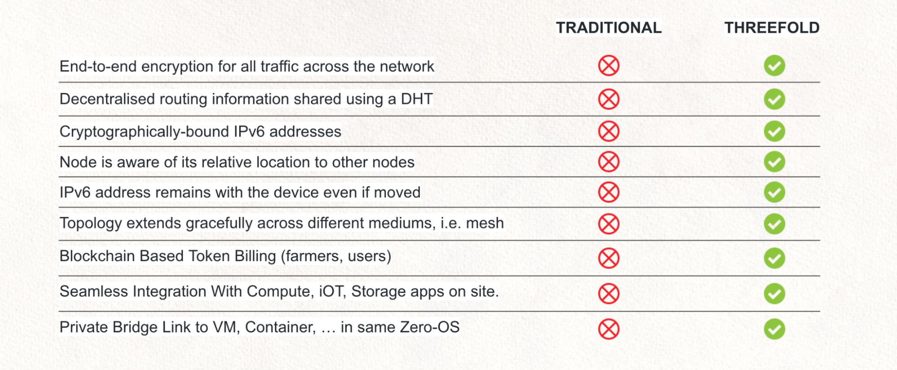
Security
Security is a super important element of web 4.
Secure Access Mechanism = Browser Firewall

For ultra secure use cases, the user doesn't use javascript in his browser, he connects over an ultra secure end2end encrypted and multi authenticated link from his browser to a secure location. In the secure location, the secure browser engine gives access to the required web and banking applications which connect further.

As an option, the web cessions can be recorded for auditing or anti-hacking/fraud detection, also in a secure location.
The twin can communicate with other twins, in a close ultra secure context, giving no chance to hackers to interfere. The data is stored on a Quantum Safe Storage system (see further).

This leads to very good protection and ‘Auditing’ opportunities.
Cyber crime will have a much harder time to be successful, way more difficult (we hope impossible).
Even in the very unlikely event a hacker would succeed, he would only interfere with one twin, which means only one customer would be affected!!! This makes it so much harder for hackers to deploy capital to hack and social engineer their way into a secure environment.